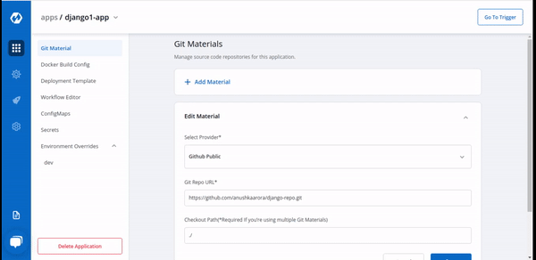

Git Material
Git material is used to pull the application source code during the CI step. Inside git material when you click on “Add material” you will see three options as shown below:
-
Select Provider
-
Git Repo URL
-
Checkout Path
Devtron also supports multiple git repositories in a single deployment. We will discuss this in detail in the multi git option below.

1. Select Provider
In the provider section, you have to select the git provider of your code repository like- Github, Gitlab, and Bitbucket, etc.You can configure your git provider via global configuration.
2. Git Repo URL
Inside the git repo URL, you have to provide your code repository’s https URL. For Example- https://github.com/Username/Repo_name.git

3. Checkout Path
The git checkout path is the directory where your code is pulled or cloned for the repository provided in the previous step.
This field is optional in case of a single git repository application and you can leave the path as default. The default value of this field is ./
But if you want to go with a multi git approach then you can leave the path as default for one of the repository but for other repositories you have to provide this path. In multi git checkout, this checkout path becomes mandatory for other repositories
4. Multi Git:
As we discussed, Devtron also supports multiple git repositories in a single application. To add multiple repositories, click on add material again and follow the steps from 1 to 3 again.
Please note even though you can add multiple repositories only one image will be created based on the docker file as shown in the docker build config.
Why do we need MultiGit support-
Let’s try to understand this with an example. Due to security reasons, you may want to keep sensitive configuration like third party API keys in separate access restricted git repositories and source code in a git repository on which every developer has access. To deploy this application both repositories code is required and multi-git will help you to do that.
Provide a different checkout path for both the repositories, if different repositories are provided the same checkout path then files from different repositories can overwrite each other. These checkout paths will be used by the docker file to create a docker image.
If any change is pushed to the configured repositories then the CI will be triggered and the image file will be built based on the latest commits of the configured repositories and pushed to the docker registry.
Few other examples, where you may want to have multiple repositories for your application and will need multi git checkout support
-
To make code modularize, you are keeping front-end and back-end code in different repositories.
-
Due to security reasons you are keeping configuration files in different access restricted git repositories.
-
Common Library extracted out in different repo so that it can be used via multiple other projects.